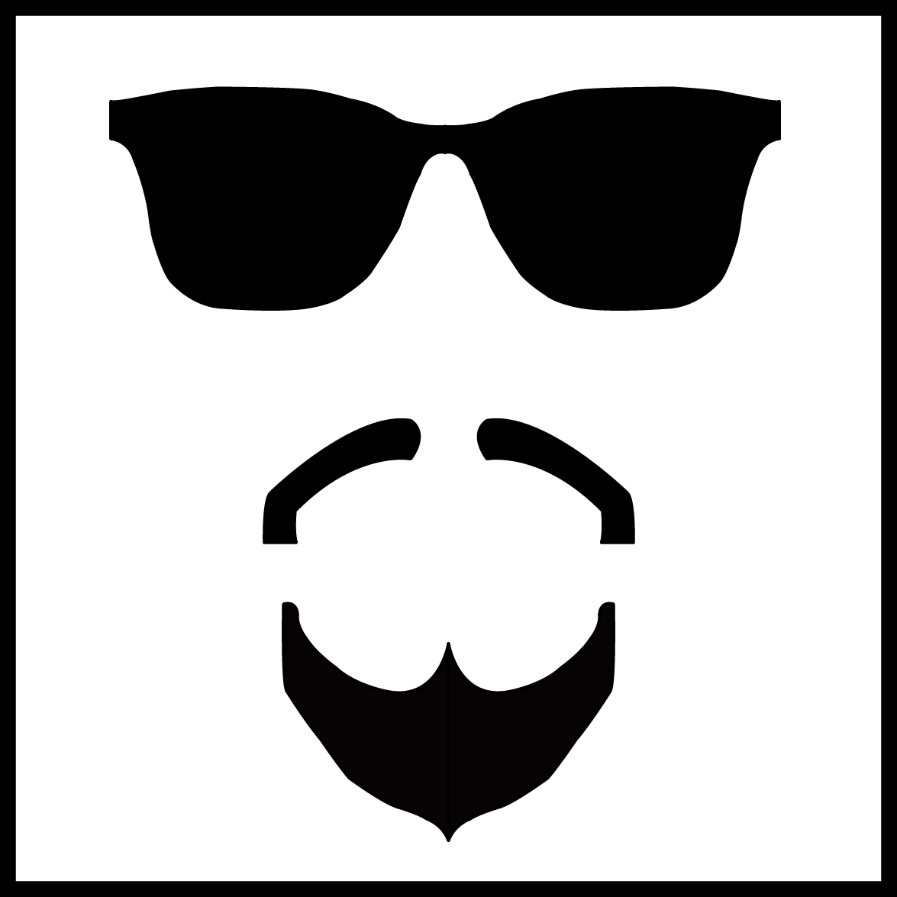

Curriculum
HOME
BIO
VIAGGI
CURRICULUM
Istruzione: Dal 2007 al 2011 Presso Istituto Tecnico Industriale "B.Focaccia"
: Dal 2014 ad oggi Presso Università degli Studi di Salerno
Competenze Inglese: Capacità lettura Ottima, Capacità scrittura Buona, Capacità espressione orale Buona